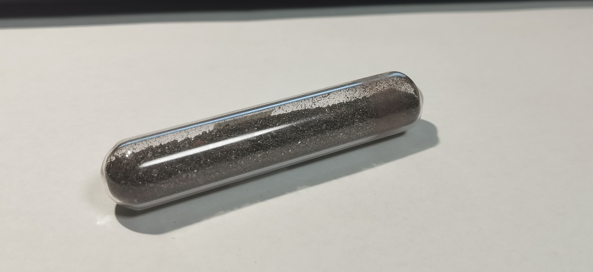

磷
2019.4 红磷 来自冥灵 
红磷：红磷是磷的一种同素异形体。通常在磷的制备上，磷蒸汽直接冷凝得到的都是白磷，白磷是磷单质中少数可以溶解在有机溶剂（也可以溶于液态SO₂和液氨）中的。囿于白磷之活泼，以及毒性，实验室通常采购无定形的红磷，工业上在673K以下加热白磷使其转化得到；当然，见光久置的白磷中也会产生黄色的红磷胶体，因此市售的试剂白磷通常由于颜色被称为“黄磷”，元素收藏上通常采用酸洗或者水蒸气蒸馏的方放获得纯净的白磷，因此既除水又能保持白色/透明色的白磷样品十分难得。
毒性：磷加热燃烧后不能采取一般的方法熄灭，通常采用断绝氧气，烧尽后用酸性硫酸铜清洗残余的方法。切记将磷与金属混合燃烧，因为这样容易产生金属磷化物，极易水解产生剧毒的膦PH₃与联膦P₂H₄.